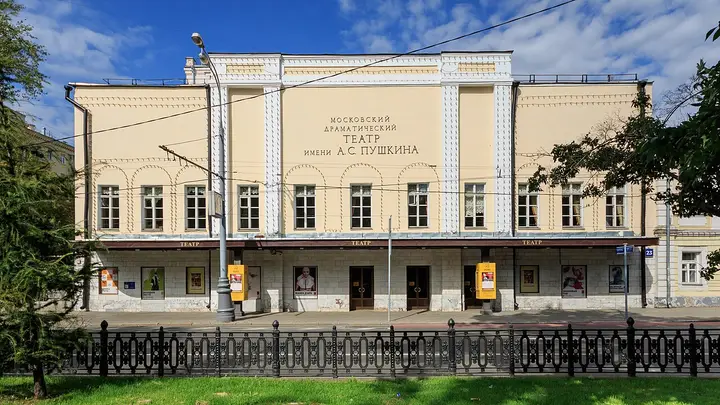

Подборку собрали 20 октября, прошедшие события скрыты. Свежая афиша — на главной

Фото: A.Savin, FAL · Wikimedia Commons
Театр · ЦАО
Театр Пушкина
Театр в особняке бывшего Камерного театра Таирова: малиновый бархат, хрустальная люстра и анфилада фойе. Тверской бульвар для прогулки — прямо у входа.
- ₽₽ · 1 500–3 000 ₽ на человека
- Новое в каталоге
- в 1 плане
- 1 событие в афише
Позвать сюда: Театр ПушкинаОткрыть в каталоге: Театр ПушкинаМаршрут до места: Театр Пушкина
Адрес и детали
- Адрес
- Тверской бул., 23
Открыть на Яндекс Картах (в новой вкладке) - Метро
- м. Тверская
- Округ
- Центр (ЦАО)
- Цена
- 1 500–3 000 ₽ на человека
- Телефон
- +7 (495) 694-12-89
- Проверено
- работает — проверили в октябре 2026
Планы с этим местом 1
- Театр Пушкина · Театр · м. Тверская
- 5 минут пешкомThe Bix · Джаз-бар
Спектакль в Театре Пушкина с малиновым бархатом и хрустальной люстрой, а потом за зелёную дверь The Bix: около девяти вечера там начинается живой джаз, вход свободный.
Открыть план: Театр Пушкина и живой джазПозвать сюда: Театр Пушкина и живой джаз
Фото: A.Savin, FAL · Wikimedia Commons

Афиша площадки 1
Театр Пушкина, Основная сцена · м. Тверская · 18+
Сентябрьская премьера Евгения Писарева — «Трёхгрошовая опера» Брехта и Вайля: зонги, бандиты и лондонское дно. Мэкки-нож — Максим Матвеев.
Подробнее: Опера нищихПозвать сюда: Опера нищихБилеты : Опера нищих (страница с билетами, откроется в новой вкладке)
Фото: A.Savin, FAL · Wikimedia Commons
Похожие рядом


Что ещё рядом

Как позвать
- Выбери план, место или событие — в карточке адрес, цены и маршрут в Яндекс Картах.
- Нажми «Позвать сюда» — соберётся приглашение-игра для свидания или голосование для компании.
- Отправь ссылку в любой мессенджер: тебе ответят, а компания отметит, куда и когда может. Бесплатно и без регистрации.